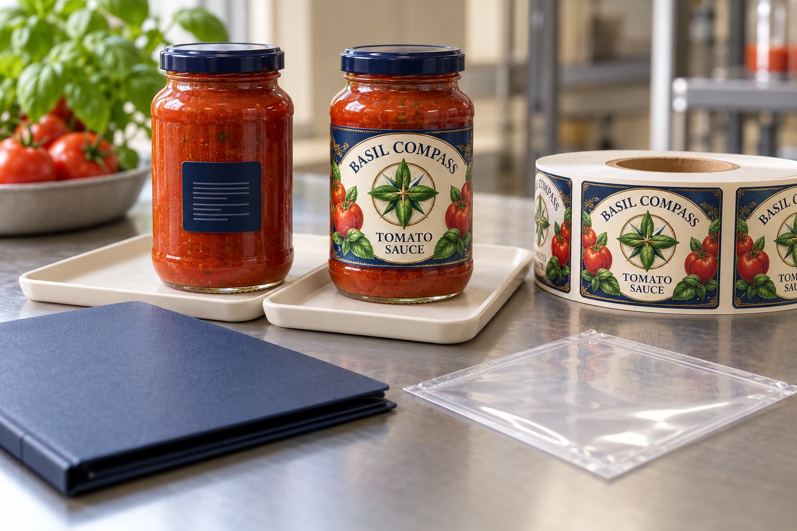
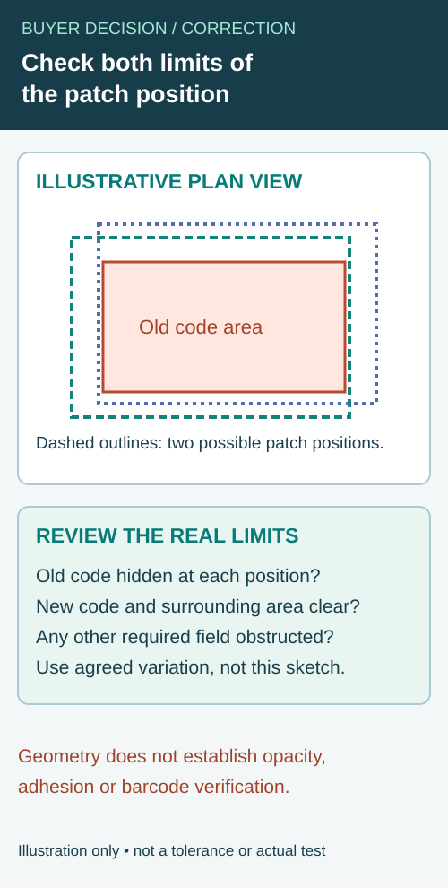

A correction label can be physically suitable while the rework operation still mixes untouched, corrected and rejected packs. A finished total does not say which inventory was actually checked or who authorized its release.
Keep correction status attached to the affected stock, with a reconciliation and named release decision. Opacity and adhesion remain necessary material questions; this article adds the operational control that prevents approved and unapproved packs from being mixed.

AI-generated packaging planning example. Basil Compass is a fictional brand; not a customer project, production test or usable retail artwork.
Define the eligible rework population
Identify exactly which packaging lot, SKU, revision and quantity are authorized for the proposed correction. Keep other stock outside that work instruction. The responsible product and quality owners must decide whether correction is permissible; a printer cannot grant that authorization from an image.
| Status | Record before moving stock onward |
|---|---|
| Awaiting decision | Affected stock identity and hold location |
| Authorized for rework | Approved correction file and eligible population |
| In process | Quantity issued, work area and responsible operator |
| Inspected | Agreed checks completed with recorded exceptions |
| Released or rejected | Named decision, quantity and destination/disposition |
| Unexplained difference | Quantity or identity gap to investigate |
These are suggested business states, not a prescribed food-quality system. Use the packer's established controls and identify how its records connect to the correction-label order.
Reconcile quantities without turning them into evidence of quality
Record stock issued, corrected, rejected and remaining under the agreed count basis. Account for samples and damaged units explicitly. A balanced quantity report can reveal missing stock but cannot establish that every patch was applied to the correct area; it needs the agreed inspection record too.
If the correction involves a code, keep old-code obscuring, new-code identity and relevant quality checks distinct. If it involves product wording, obtain authorization from the responsible content reviewer. Do not assume that hiding an old statement resolves every consequence of the original error.
Preserve the first accepted corrected pack
Use an identified reference showing placement and the entire finished package. Agree how the rework team checks subsequent packs and handles deviations. Do not derive a sampling plan from a stock illustration or an arbitrary percentage in an article.
If the old label or pack is unstable, the patch may not be an appropriate solution. A controlled rework record cannot repair a lifting base label, damaged packaging or an unresolved product issue. Compare replacement packaging when necessary, with the responsible owners deciding the route.
See barcode verification versus scanning for code evidence, co-packer receiving and release for the stock handoff and multi-SKU control for version separation. The record here concerns a defined correction operation rather than a general label order.
Define the placement window for a barcode correction
An opaque patch can hide the old bars when it is centered carefully on a sample. In production, the applicator or operator may place it slightly differently. The purchasing question is whether the agreed placement range still covers the old symbol while leaving the new symbol and its required surrounding area usable on the finished pack.


Start with the actual package and the old symbol's complete printed area. Ask the data owner to identify which symbol is being withdrawn and which authorized replacement belongs to the SKU. Have the responsible quality and packaging teams decide whether correction is permissible for that product and market before buying the patch. This worksheet does not assign barcode numbers, prescribe a clearance or authorize a food-label correction.
| Placement field | Record for the actual pack | Review question |
|---|---|---|
| Old symbol | Artwork revision, actual printed location and full area to hide | Does the patch cover the intended old symbol in the agreed position range? |
| Patch footprint | Finished cut, construction and drawing revision | Does the proposed shape cover the old area without obstructing another required field? |
| Application position | Real reference edge and agreed placement variation | What happens at the limiting permitted positions? |
| New symbol | Approved identifier, artwork and intended orientation | Is the correct new data present on the final patch? |
| New surrounding area | Space and background required by the applicable receiving specification | Does the final pack preserve the area the verifier requires? |
| Finished pack review | Actual package curvature, old surface and final application | Which opacity, adhesion and code checks are still open? |
Look at both ends of the permitted placement range
On a clearly marked nonproduction example, draw the old symbol boundary and the patch footprint at the proposed minimum and maximum placement positions. Use the actual units and variation agreed by the packer and supplier. If the old symbol would be exposed at one limit, the centered sample does not cover the full placement question. If the patch covers a lot code or product information at another limit, that creates a different exception for the content owner.
The drawing is a geometric review aid, not a scanner test or a tolerance recommendation. Inspect actual corrected packs using the agreed method and receiving conditions. An old symbol hidden visually may still need an appropriate scan-related assessment, while a new symbol that scans on one phone has not necessarily met a formal verification requirement. The barcode verification guide explains the different evidence questions.
Keep the correction and its stock boundary connected
Tie the approved patch drawing to its old and new artwork revisions, the eligible stock and the responsible release. If package size, old-code position, applicator setup or correction artwork changes, ask whether the earlier placement window still applies. A hand-applied proof may show the intended position but may not represent a later automatic operation.
If no practical patch position covers the old area and preserves the new information under the real variation, consider a revised patch, another approved placement or replacement packaging. Compare actual work and cost before selecting a route. The existing rework record should still distinguish corrected, inspected and held stock; a valid placement drawing alone cannot release inventory.
For a correction-label inquiry, send the actual printed pack or a clear marked photo, old and authorized new code areas, proposed patch footprint, application method and eligible quantity. Ask which construction and sample evidence can be provided. Product authorization and any required code or regulatory decision remain with the responsible business.
Short answer
Opaque blockout labels hide obsolete graphics, barcodes or text so usable packaging can be corrected without the old information showing through. The construction must provide opacity, adhesion and a clean visual edge on the actual package.
Ordinary white labels are not automatically opaque. Hold one over a black barcode and the bars may remain visible. Under a scanner, even partial show-through can create ambiguity. A correction label needs to be tested as a correction, not approved because it looked white on the roll.
What blockout labels are used to correct
| Change | Main risk | Verification |
|---|---|---|
| Barcode replacement | Old and new codes both scan | Scan from multiple angles and distances |
| Ingredient or warning correction | Old copy remains readable | Visual opacity and legal review |
| Distributor or address update | New patch looks temporary or misaligned | Finished-pack appearance standard |
| Seasonal packaging reuse | Large old graphics show through | Color and opacity sample on production pack |
| Language or market change | Wrong version packed or applied | SKU control and line reconciliation |
A composite barcode correction
This is a composite planning example. A food brand discovers that 18,000 printed pouches carry an old retail barcode. The first solution is a standard white paper label because it is inexpensive and available quickly. On the table it looks acceptable. Under the warehouse scanner, the old dark bars remain faintly visible and one angle reads the wrong code.
The proposed patch must be reviewed for its actual coverage, new content and finished-pack behavior before speed becomes the deciding factor.
How opacity is created
Blockout performance can come from an opaque face stock, a dark or metallic barrier layer, a high-opacity coating, or a combined construction. The correct approach depends on how dark and colorful the original artwork is. A white patch over pale copy needs less hiding power than a pale yellow patch over a black barcode and red promotion panel.
Ask whether the supplied sample is an actual blockout construction or a white label printed with extra ink. Heavy ink can help, but it may not create the same stable barrier and can affect color, drying or scuff resistance.
The old surface becomes the new substrate
When a correction label is applied over an existing label, the adhesive no longer bonds to the bottle or pouch. It bonds to the old label's laminate, varnish, paper or ink. A glossy overlaminate may behave differently from uncoated paper. Powder, oil and dust from storage add another layer of risk.
- Confirm the old label is firmly attached and not already lifting.
- Check whether its edges or embossing telegraph through the patch.
- Use rounded corners where hand application could catch an edge.
- Allow enough margin to cover old information despite placement tolerance.
- Test storage temperature, abrasion and case packing after rework.
Rework labor can exceed label cost
The label purchase price may be small compared with the hand application, inspection and inventory control cost much more. Measure how long one operator takes to position the patch correctly, how many packs fit in a shift and what happens to errors. A low-cost label that requires surgical alignment may be the expensive option.
| Rework question | Why it matters |
|---|---|
| Can the patch use an existing edge as a guide? | Reduces placement time and variation |
| Does the old code need complete margin coverage? | Determines patch size and tolerance |
| Will application be manual or automatic? | Controls roll format, gap and dispensing |
| How are corrected units counted? | Prevents mixed inventory |
| Who approves regulatory copy? | Separates print accuracy from legal approval |
When a blockout label is the wrong tool
Do not use a patch to hide unsafe, damaged or contaminated packaging. Do not assume it resolves legal responsibility for incorrect allergen, nutrition or market information. The responsible brand owner should review the correction method and copy. Large changes, unstable old labels, severe wrinkles or high-speed placement constraints may make new packaging the safer and more economical choice.
Blockout-label quote checklist
- Send the actual printed package or a high-resolution flat sample.
- Mark the exact information that must become unreadable or unscannable.
- Provide the new artwork and required placement tolerance.
- State the old surface material, coating and storage condition.
- Explain manual or automatic application and roll requirements.
- Define inspection, barcode scan and inventory reconciliation.
- Approve a production-material sample on the actual package.
Opacity needs to be reviewed on the actual corrected pack, not inferred from the loose label color. For barcode layout, read Barcode and QR Code Labels. For short corrected batches, see Multi-SKU Short-Run Label Printing.
Send the relevant project details
Discuss a blockout correction-label specification with package samples/photos, the exact area to cover, proposed artwork, eligible quantity, surface and application method. State the evidence and status controls your rework operation requires. The form opens an email draft; send files through listed email or WhatsApp. Product authorization and stock release remain with the responsible business owners.